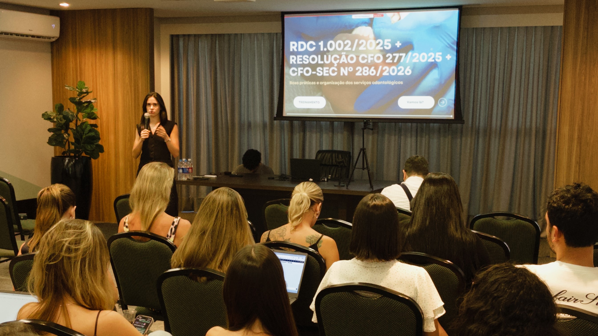
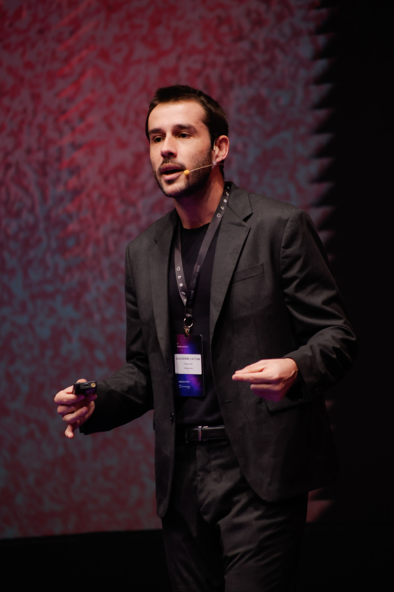

Seus termos precisam estar à altura de quem você é.
Guilherme Juk Cattani - O primeiro advogado da harmonização do Brasil
Sua tranquildade não é gasto, é investimento.
Valor médio de indenização em ações por resultado estético insatisfatório no Brasil
Duração média de um processo judicial na área de saúde, período em que sua reputação fica exposta
Risco ao registro profissional quando a documentação não comprova consentimento informado adequado
Um arquivo Word baixado na internet não conhece sua clinica, nem vive todos os casos reais da harmonização.
Os documentos personalizados da Juk Cattani são constantemente atualizados por um time de mais de 60 especialistas que trabalham com o mercado da harmonização todos os dias.
É um processo artesanal de personalização e cuidado.

Cada cláusula nasceu de um caso real
Existem muitas opções de documentos para estética no mercado. Veja o que realmente difererencia cada uma.
| Modelos genéricos/ Kits digitais/ IA | Termos Juk Cattani | |
|---|---|---|
| Quem elabora | Autor variável, empresário, designer, algoritmo ou advogado generalista | Time de advogados especialistas em direito para harmonização estética |
| Personalização | Modelo fixo, você preenche campos em branco | Elaborado a partir dos seus procedimentos, equipe e modelo de atendimento |
| Atualização | Arquivo estático, não reflete mudanças do CFO, CFBM, CFF ou ANVISA | Construído por quem acompanha o mercado diariamente |
| Uso de IA | Frequente, gerado ou revisado 100% por IA sem especialização jurídica | Cada cláusula escrita e revisada por advogado especialista |
| Treinamento | ✕ Não oferecido | ✓ Incluso com advogado especialista e material de apoio |
| Responsabilidade | ✕ Nenhuma, você assina, você responde | ✓ Total, a Juk Cattani assina cada documento entregue |
| Quando contestado | Você enfrenta o processo com um documento que ninguém defende | ✓ Você tem a quem recorrer |

Poucos profissionais entendem tão profundamente os bastidores jurídicos, comerciais e regulatórios da harmonização quanto Guilherme Cattani.
Respostas diretas para o que está na sua cabeça agora.
Proteção jurídica real, construída especificamente para a sua clínica, pelos advogados que mais entendem de estética no Brasil.
Quero ter esses termos